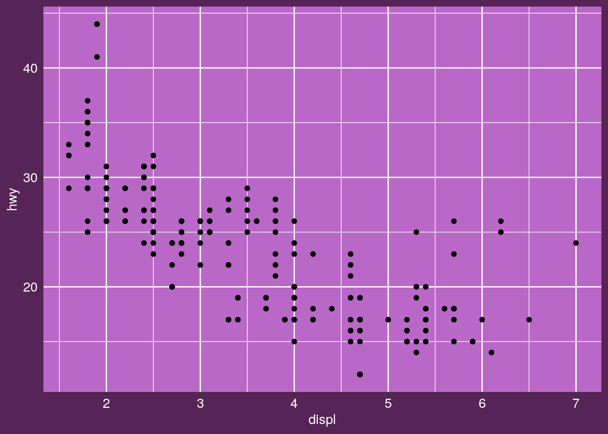
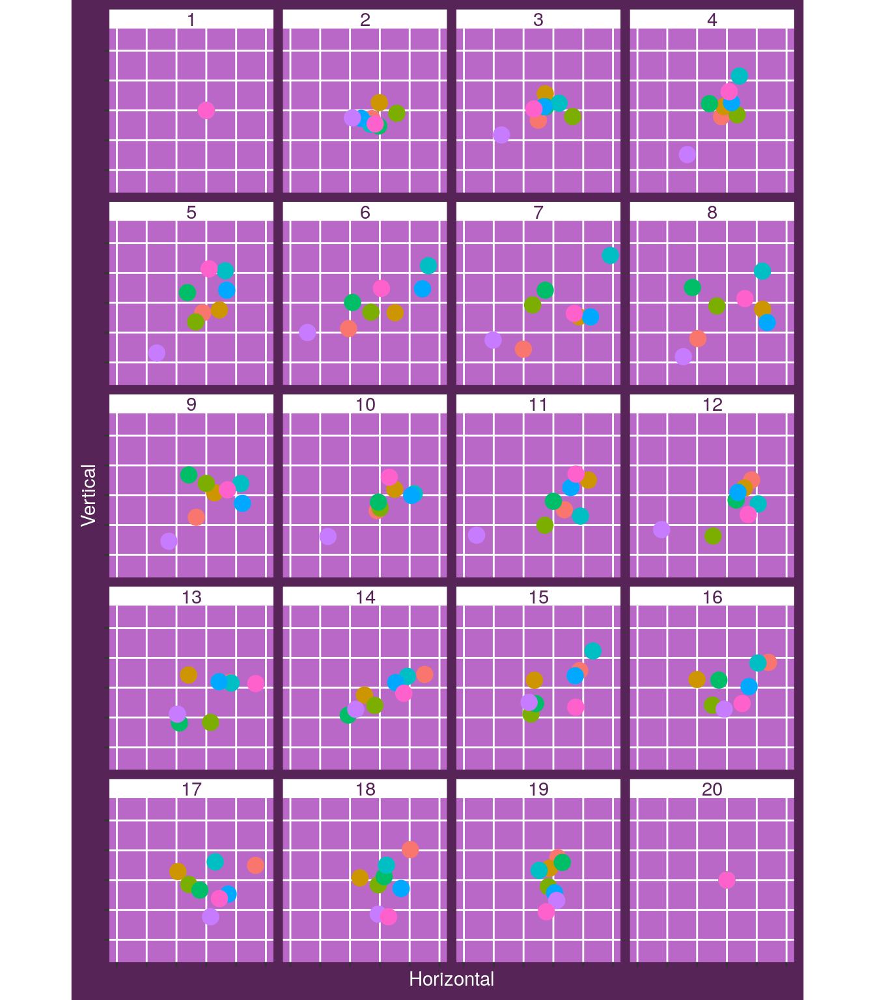
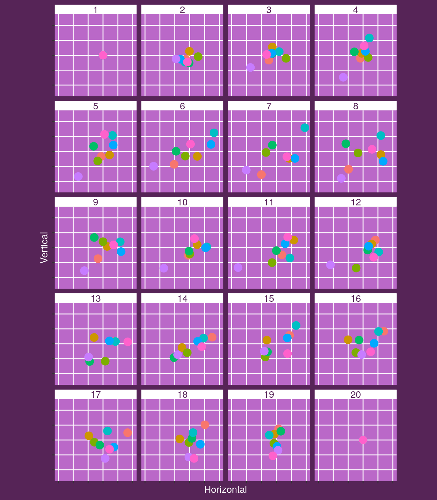
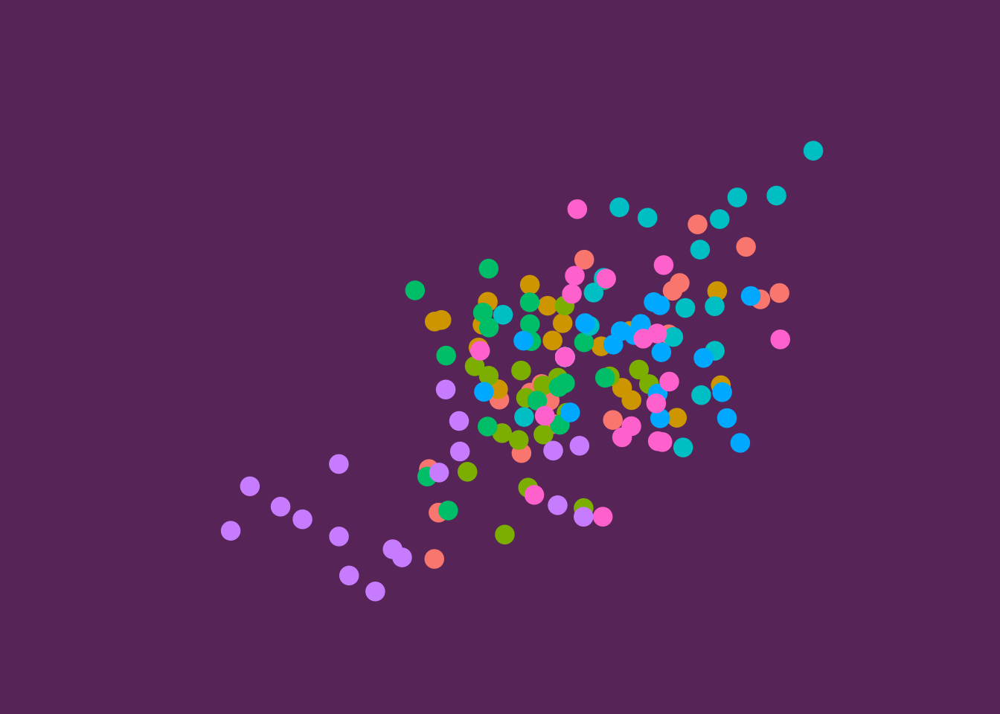

A kunoichi page
The kunoichi palette
In an earlier post I created the kunoichi palette. This is an example of a project page that uses this user-generated palette.
library(tidyverse)
library(slumdown)
ggplot(mpg, aes(displ, hwy)) +
geom_point() + theme_slum("kunoichi")
A plot with faceting:
# Note that this is the path as specified within your slumdown project.
# At the time blogdown serves the site, this ends up in the /data folder
# not /static/data.
filepath <- here::here("static", "data","brownian_bridges.csv")
bridges <- read_csv(filepath)
b <- ggplot(
data = bridges,
mapping = aes(
x = Horizontal,
y = Vertical,
colour = factor(Series))) +
geom_point(
show.legend = FALSE,
size = 4) +
coord_equal() +
scale_x_continuous(limits = c(-1.5, 1), labels = NULL) +
scale_y_continuous(limits = c(-1.25, 1.25), labels = NULL) +
theme_slum("kunoichi") +
theme(panel.grid.minor = element_blank())
b + facet_wrap(vars(Time), nrow=5)
The white space here is annoying, and it ruins the whole aesthetic of the plot. The source of the issue is not ggplot, however, it occurs because the png file generated by R markdown has a different aspect ratio than the one that ggplot specifies The result is that the graphics device (png() in this case) supplies its own background colour, which defaults to white. Happily, knitr allow us to pass custom arguments to the graphics device, and slumdown provides a convenience function that does this:
slum_plot_background("kunoichi")So now when we create the figure, the background is seamless because ggplot, the graphics device and the HTML page all rely on the “pagecolour” value specified in the kunoichi palette:
b + facet_wrap(vars(Time), nrow=5)
Alternatively, using theme_void() will remove all ggplot2 theme information, so now the background colour is supplied by the graphics device, and we can obtain animations like this
b + theme_void()